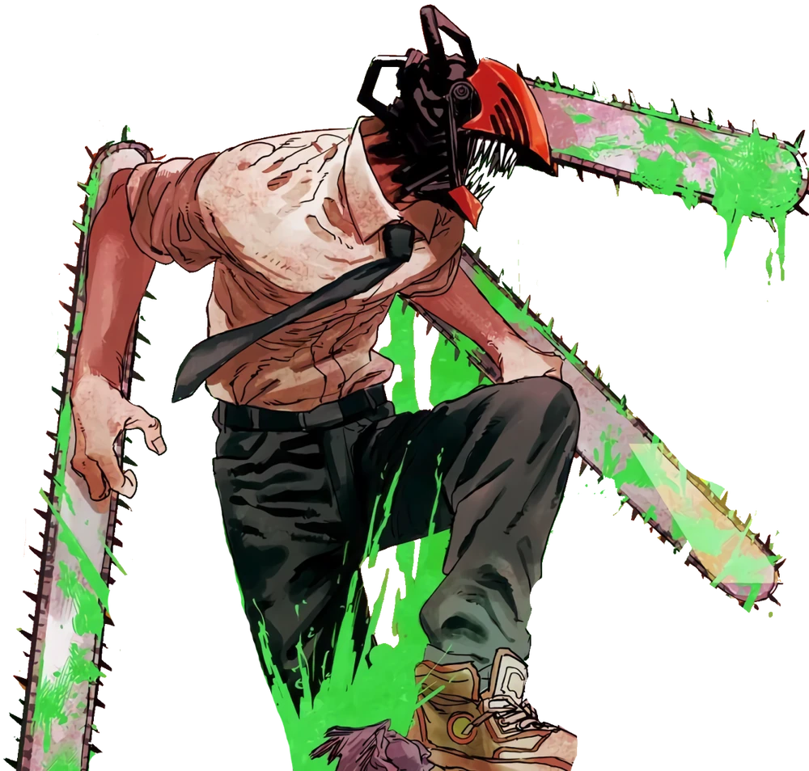
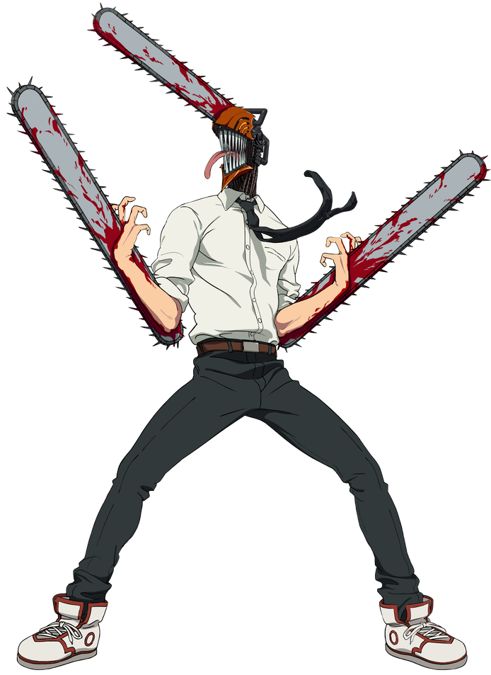
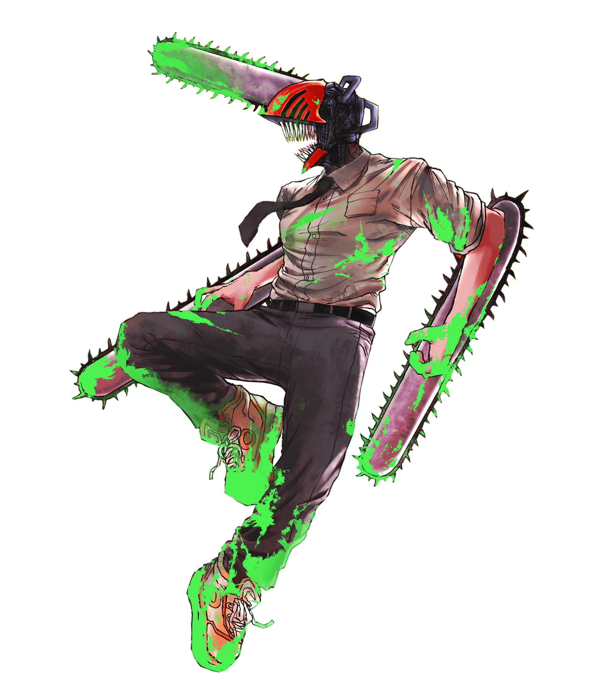

Um diabo com uma motosserra na cabeça. Um garoto que só queria comer pão com geleia. Uma história sobre sangue, contratos e o preço de sonhar.

Tamanho sugerido: ~200×380px, fundo transparente (PNG) -->
Tamanho sugerido: ~200×380px, fundo transparente (PNG) — esta fica centralizada e mais alta -->
Tamanho sugerido: ~200×380px, fundo transparente (PNG) -->Denji era um jovem miserável, endividado por culpa do pai, obrigado a caçar Diabos para pagar uma dívida impagável à Yakuza. Seu único companheiro era Pochita, um Diabo Motosserra em forma de cachorrinho.
Após ser traído e assassinado, Pochita faz um contrato com Denji: funde-se ao seu coração. Denji ressurge como o lendário Homem Motosserra — capaz de gerar motosserras do próprio corpo e dotado de regeneração sobre-humana.
Recrutado pela Divisão de Caça aos Diabos, Denji mergulha num mundo de contratos sombrios, violência e revelações devastadoras sobre a natureza dos Diabos — e sobre o que realmente é Pochita.
Motosserras nos braços e na cabeça. Sangue espalhado. A transformação primária de Denji, onde o contrato com Pochita se manifesta em toda sua brutalidade crua.
A forma selvagem e destruidora de Denji. Energia verde vazando pelo corpo, motosserras múltiplas ativas — o poder de Pochita em estado bruto e incontrolável.
Postura de ataque total. Motosserras atravessando o corpo inteiro. A energia verde representa a força regenerativa máxima ativada — nada para, nada o detém.
Fiend do Diabo do Sangue. Egocêntrica, caótica e brutalmente honesta. Apesar do temperamento explosivo, desenvolve um vínculo improvável com Denji e Meowy.
ALIADAOficial de alto escalão da Divisão de Caça aos Diabos. Misteriosa, calculista e de sorriso perturbador. Seus objetivos reais — quando revelados — mudam tudo.
ANTAGONISTACaçador veterano movido pela vingança. Fez contratos com o Diabo da Raposa, o Diabo do Futuro e o Diabo da Neve. Seu destino é um dos momentos mais devastadores da obra.
ALIADOO verdadeiro Diabo Motosserra, manifestado como cachorrinho. Temido como o ser mais poderoso: devorou outros Diabos apagando-os da memória universal. Amou Denji acima de tudo.
DIABO LENDÁRIOA melhor caçadora de Diabos da China. Combate com brutalidade elegante, possui um harém de Fiends devotas e é considerada uma força da natureza no campo de batalha.
CAÇADORAParceira veterana de Aki. Possui contrato com o Diabo Fantasma — cada contrato custou um olho, depois um braço. Pragmática até o fim, age por lealdade absoluta aos seus aliados.
ALIADADiabos são manifestações físicas dos medos da humanidade. Quanto mais se teme algo, mais poderoso o Diabo dessa coisa se torna. Quando mortos, ressurgem no Inferno — e vice-versa.
O mais temido. Apagou Diabos inteiros da memória coletiva ao devorá-los. Quanto mais esquecido o medo, mais poder absorve.
Responsável pela morte da família de Aki. Opera através de humanos e Fiends para espalhar armas e violência pelo mundo.
Pode prever a morte de qualquer pessoa ao olhar para cima. Fez contrato com Aki ao custo progressivo de seus membros.
Aliado de Aki. Pode devorar inimigos com sua gigantesca cabeça de raposa. Cobrou alto preço por seus serviços de contrato.
Manifestação do medo universal de aranhas. Membros longos e movimentos erráticos. Territorialidade agressiva e ataque rápido.
Katana Man, trabalhava para a Yakuza. Rival direto de Denji, com poder de transformação similar ao do Homem Motosserra.
Extremamente perigoso — torna qualquer espaço próximo inacessível. Utilizado como armadilha mortal contra caçadores de diabos.
Manifesta os piores pesadelos das vítimas. Capaz de prender alvos em loops de terror psicológico sem retorno aparente.
Denji e Pochita caçam diabos para pagar dívidas. A traição da Yakuza, a morte e o renascimento como Homem Motosserra. Recrutamento pela Divisão Pública de Segurança.
Primeiro trabalho real com Power. A missão para resgatar Meowy revela a natureza traiçoeira dos Diabos e a força bruta de Denji em ação pela primeira vez a sério.
Ataque devastador da Yakuza contra toda a Divisão. Denji enfrenta seu rival mais equilibrado. A Yakuza opera sob ordens de uma força maior e muito mais sombria.
Investigação sobre o Diabo da Pistola e seus aliados internacionais. Múltiplas caçadoras estrangeiras entram em cena. O passado de Aki e sua vingança se aprofundam de forma pesada.
A Divisão inteira é teleportada para o Inferno. Sobrevivência desesperada no reino dos Diabos. A escala de poder do universo é revelada de forma brutal e definitiva.
O verdadeiro plano de Makima se desenrola. Perdas irreparáveis. A revelação sobre quem e o que é Makima muda completamente a percepção de toda a história até aqui.
Denji enfrenta Makima pelo destino do Diabo Motosserra. O sacrifício de Power. O único método para derrotar o Diabo do Controle: amá-la de volta.